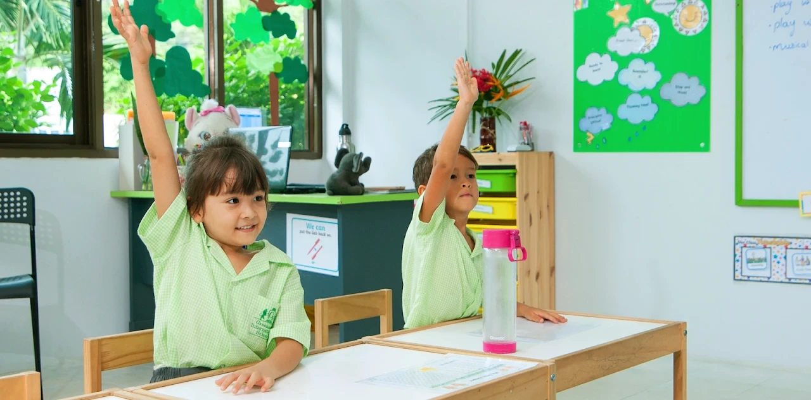
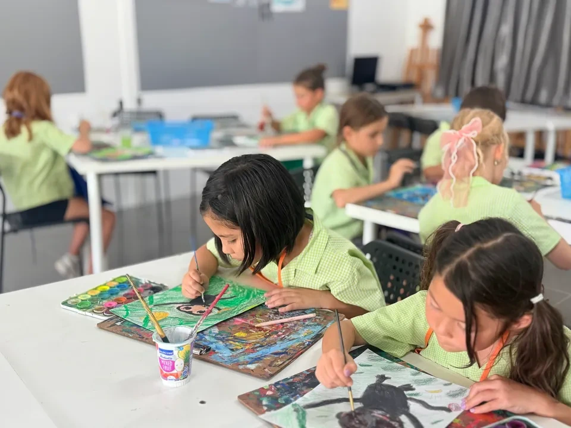

Curriculum
A continuous learning journey from Early Years to Cambridge IGCSE, combining internationally recognised programmes with elements of the UK curriculum.
Clear progression from age 3 to 16
Greenacre provides a progressive learning pathway from age 3 to 16. The curriculum combines internationally recognised programmes with elements of the UK curriculum, progressing to Cambridge IGCSE in Years 10 and 11.
Our curriculum combines strong subject knowledge with confidence, creativity, critical thinking and international mindedness. Environmental responsibility, gratitude and our GREEN values are part of the wider learning experience.

One connected journey through school
Learning through play, investigation and purposeful experiences.
PrimaryYears 1-6Progressive learning with an increasing Cambridge Primary focus.
Key Stage 3Years 7-9Cambridge International learning that builds subject depth and independence.
IGCSEYears 10-11Cambridge IGCSE study and assessment across the school's current subject pathway.

Knowledge, skills and personal growth
Teaching is planned to support academic progression and the needs of individual learners. Cross-curricular links are used where appropriate and learning is differentiated to support pupils including those with SEND and EAL.
Further details about EAL support and applicable charges can be found in the 2026/27 fee schedule.